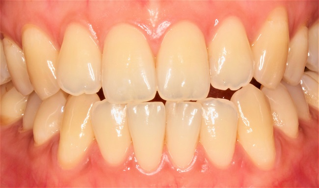
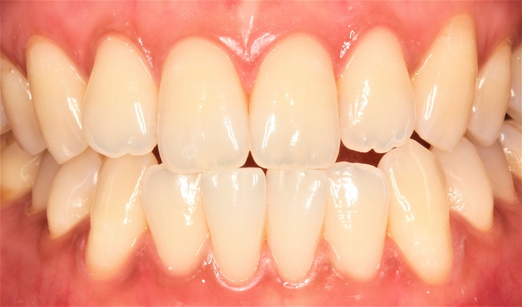
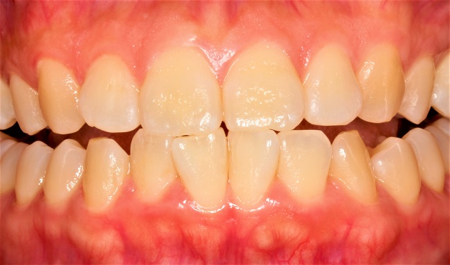
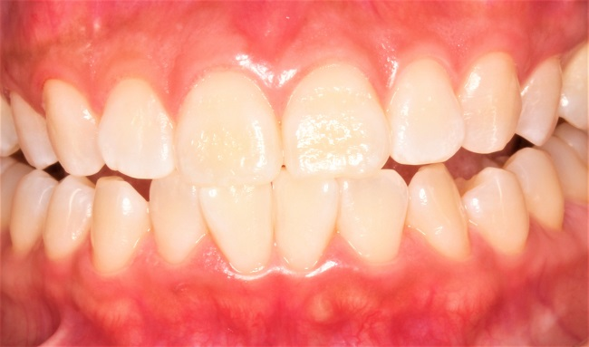

ホワイトニング WHITENING
ホワイトニング（ブリーチング）とはご自身の健康な歯の着色や変色を薬剤によって白くする治療法です。クリニックで行うオフィスホワイトニングと専用のキットを用いてご自宅で利用していただくホームホワイトニングがあります。
その両方を同時に行うデュアルホワイトニングは「とにかく早く歯を白くしたい！」という患者様にお勧めです。
■ オフィスホワイトニング
オフィスホワイトニングは歯科医院で歯科医師または歯科衛生士が施術するホワイトニングで、高濃度の過酸化水素を光で活性化することで着色物質を分解して歯を白くします。
当クリニックで施術するホワイトニングはしみにくく、歯の表面がつるつるになり歯質も強化されるのが特徴です。とにかく痛みがほとんどないホワイトニングですから安心して施術を受けていただけます。１回でも歯は白くなりますがご希望の白さになるまで２～４回の通院を目安にしてください。
ただし上下前歯部が適応で光照射のできない奥歯はホワイトニングできないのでご注意を。

治療前

治療後
- 虫歯がある場合には、先に虫歯の治療が必要な場合があります。
- 妊娠中の方、妊娠の可能性のある方はご遠慮ください。
- 薬などによる歯の変色は、ホワイトニングの効果がでにくいです。
- 歯が白くなる速さはその人によって異なります。ケースによってはホームホワイトニングの併用が必要なことがあります。
- 詰めている部分やかぶせている歯に対しては、ホワイトニングの効果はほとんどありません。
- 痛みや知覚過敏が起きる可能性があります。（ほとんどの場合、数日で回復します）
- 歯肉や口唇に薬剤が付着するとその部分が白くなることがあります。（数時間で回復します）
■ ホームホワイトニング
型取りをして作製したマウスピースに薬剤を入れて、１日２時間装着するだけのご自身でできる非常に簡単なホワイトニングです。ご希望の白さになるまで約２～４週間続けていただきます。
当クリニックでは薬剤はTiON（ティオンホーム）を使っております。
歯にしみにくく白色で確認しやすく使いやすいのが特徴です。

治療前

治療後
- 虫歯がある場合には、先に虫歯の治療が必要な場合があります。
- 妊娠中の方、妊娠の可能性のある方はご遠慮ください。
- 薬などによる歯の変色は、ホワイトニングの効果がでにくいです。
- 歯が白くなる速さはその人によって異なります。ケースによってはホームホワイトニングの併用が必要なことがあります。
- 詰めている部分やかぶせている歯に対しては、ホワイトニングの効果はほとんどありません。
- 痛みや知覚過敏が起きる可能性があります。（ほとんどの場合、数日で回復します）